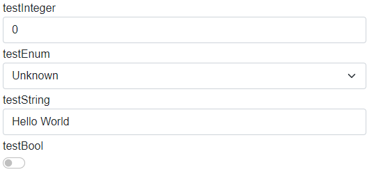
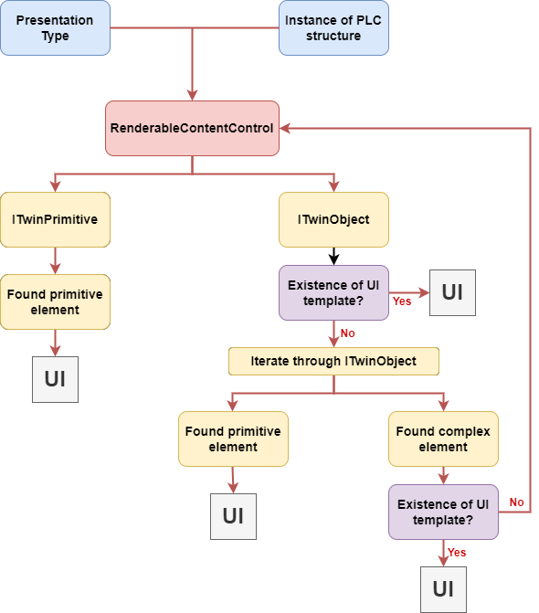
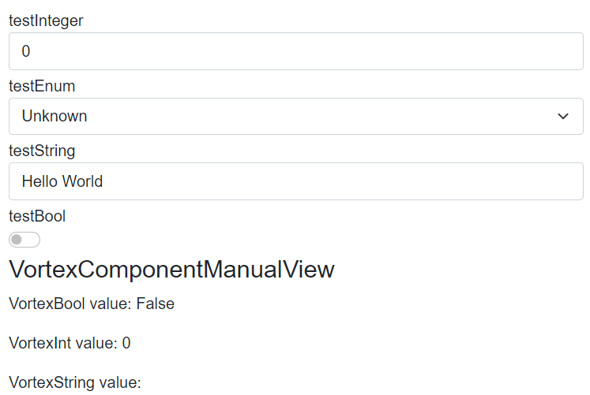
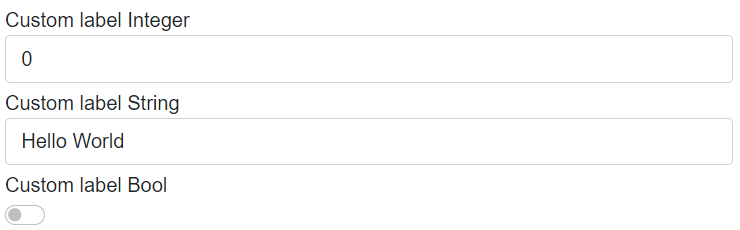
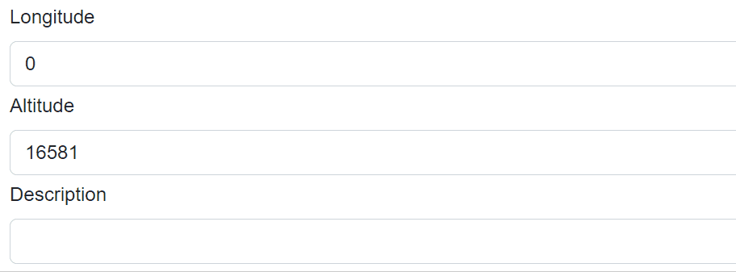
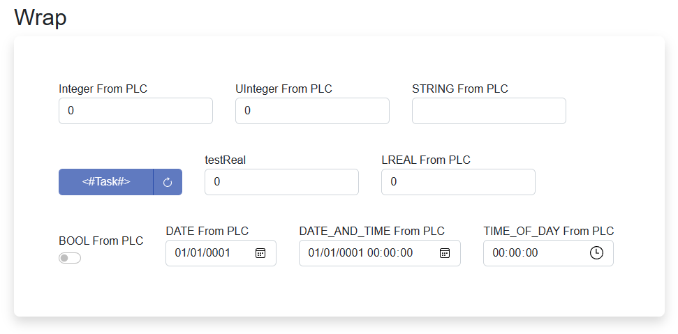

RenderableContentControl
This file describes the purpose, features and usage of the RenderableContentControl component.
Table of Contents
What is RenderableContentControl?
RenderableContentControl is a Blazor component, which is able to automatically generate UI from C# objects acquired within Ix Framework. Ix compiler will create twin C# classes of PLC classes, which instances can be pass to RenderableContentControl to generate corresponding views. It can render both complex objects (ITwinObject type) and primitive objects containing values (ITwinPrimitive type). In addition, resulting UI can be adjusted with attributes from PLC code.
Basic example
Let's have following PLC structure stExample:
CLASS stExample :
VAR PUBLIC
testInteger : INT;
testEnum : stTestEnum;
testString : STRING := 'Hello World';
testBool : BOOL;
END_VAR
END_CLASS
IxCompiler will create stExample counterpart in C#. After that, this new object can be passed as parameter to RenderableContentControl.
<RenderableContentControl Presentation="Control"
Context="@Entry.Plc.MAIN.instanceOfstExample"/>
We will get the following auto-generated UI:

How automatic generation of UI works
Ix.Presentation.Blazor framework contains two libraries:
- Ix.Presentation.Blazor
- Base classes
- Services
- Interfaces
- Ix.Presentation.Controls.Blazor
- Styles
- Layouts
- UI templates of primitive types
- RenderableContentControl component
The diagram below represent fundamental logic of UI generation:

- The RenderableContentControl accepts as parameters instance of plc structure and presentation type.
- Renderer will determine, whether input instance is of type ITwinPrimitive or ITwinObject:
- ITwinPrimitive: The renderer will find a corresponding UI primitive template and then render the UI.
- ITwinObject: The renderer will try to find a corresponding UI of complex template. If the complex template is found, UI will be rendered. Otherwise, ITwinObject will be iterated down to primitive types, which then will be rendered with primitive UI templates.
Features
Presentation types
Presentation types specify mode in which UI will be rendered. Within Ix.Presentation.Blazor framework following presentation types are supported.
DisplayControlShadowDisplayShadowControl
In the Control presentation type, values of rendered structure can be modified. On the other hand, the Display presentation type serves for displaying values. If no presentation type is specified, Display presentation type will be used.
Presentation pipeline
Presentation pipeline is represented by a string of presentation types. Each presentation type is separated by a dash '-'. RenderableContentControl will parse this string and will look for UI templates specified by presentation types in the pipeline. If the first presentation type is not found, it'll look for other one in the pipeline and so on...
See the example below:
Let's add new property to the stExample structure. New type IxComponent is a component from an external library whose UI implementation is of Manual presentation type.
CLASS stExample :
VAR PUBLIC
testInteger : INT;
testEnum : stTestEnum;
testString : STRING := 'Hello World';
testBool : BOOL;
testIxComponent: IxComponent; //added property
END_VAR
END_CLASS
Let's have the following code, where we specify the presentation pipeline:
<RenderableContentControl Presentation="Manual-Control"
Context="@Entry.Plc.MAIN.instanceOfstExample"/>
Renderer will generate following UI:

Primitive types are generated in Control presentation type whereas IxComponent is generated in Manual presentation type, because Manual view have been found first.
RenderIgnore and custom labels
Thanks to the support of custom attributes in the PLC code you can specify, which elements you want to exclude from rendering. You can also set custom names for each element. See the example below.
Let's have the following PLC code with attributes:
CLASS stExample :
VAR PUBLIC
{#ix-set:AttributeName = "Custom label Integer"}
testInteger : INT;
{#ix-attr:[RenderIgnore()]}
testEnum : stTestEnum;
{#ix-set:AttributeName = "Custom label String"}
testString : STRING := 'Hello World';
{#ix-set:AttributeName = "Custom label Bool"}
testBool : BOOL;
{#ix-attr:[RenderIgnore()]}
testIxComponent: IxComponent;
END_VAR
END_CLASS
Renderer will render following UI:

Properties testEnum and testIxComponent are ignored and the rest of the elements have custom labels.
It is possible to ignore properties only in specific presentation types:
{#ix-attr:[RenderIgnore("Display","ShadowDisplay")]}
testIxComponent: IxComponent;
Edit Property
Then renderer binds variables to Cyclic or Edit property of an Onliner. When an element gets focus, value is bound to Edit property and UI updates stops. After the focus is lost, the value is bound back to Cyclic property and the value in the UI start updating again.

Renderable content control Polling
When the twin connector is in polling mode, RenderableContentControl will take the parameter PollingInterval into consideration. The polling will start automatically when the content is rendered and will unsubscribe when it is disposed.
Example
<RenderableContentControl Context="@Entry.Plc.measurements" Presentation="Display" PollingInterval="1000"/>
Layouts
Auto-generated UI can be customized by layouts. More information about layout is in LAYOUTS file.
Layouts adjustment
Layouts can be adjusted by passing CSS classes as parameters into RenderableContentControl component.
Renderer supports following parameters:
- Class -- class wrapper around entire RenderableContentControl component
- LayoutClass -- class wrapper around layouts
- LayoutChildrenClass -- class wrapper around layouts children
Warning! Layout classes are passed to all children (and layout wrappers) within RenderableContentControl, so use with caution!
Example:
<RenderableContentControl
Context="@Entry.Plc.test_example.compositeWrap"
Presentation="Base-Control"
LayoutClass="align-items-end"
LayoutChildrenClass="p-3"
Class="p-5 mb-4 bg-light rounded-3 shadow" />
Result:

Styling
Ix.Presentation.Blazor contains in-built styles. Styling is provided by Bootstrap library. In-built styles can be customized with Sass technology, which will produce SCSS files. SCSS files can be compiled into one CSS file which can be used as application-wide style.
Currently, the framework contains a default style that can be added as a reference in the Blazor application file _Host.cshtml in the following way:
<link rel="stylesheet" href="/_content/IX.Presentation.Blazor.Controls/css/ix-bootstrap.min.css">
It is possible to add built-in javascript libraries as well:
<script src="/_content/IX.Presentation.Blazor.Controls/js/ix-bootstrap.bundle.min.js"></script>
<script src="/_content/IX.Presentation.Blazor.Controls/js/jquery-3.6.0.min.js"></script>
Custom components libraries
Ix.Presentation.Controls framework provides possibility to create a custom library of components with corresponding views. When library is referenced from your Blazor project, the framework will automatically load its views, which then can be auto-generated with the RenderableContentControl component.
For more information about custom libraries and how to create them, look into LIBRARIES file.